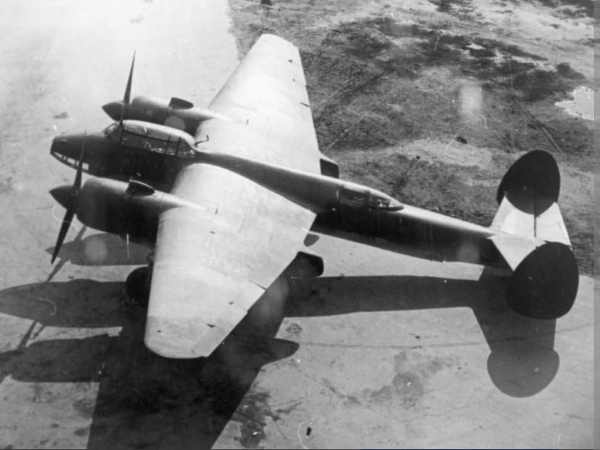
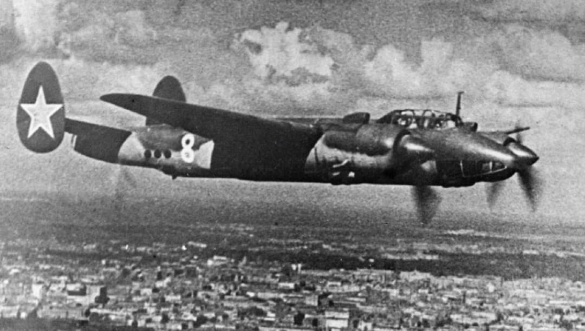
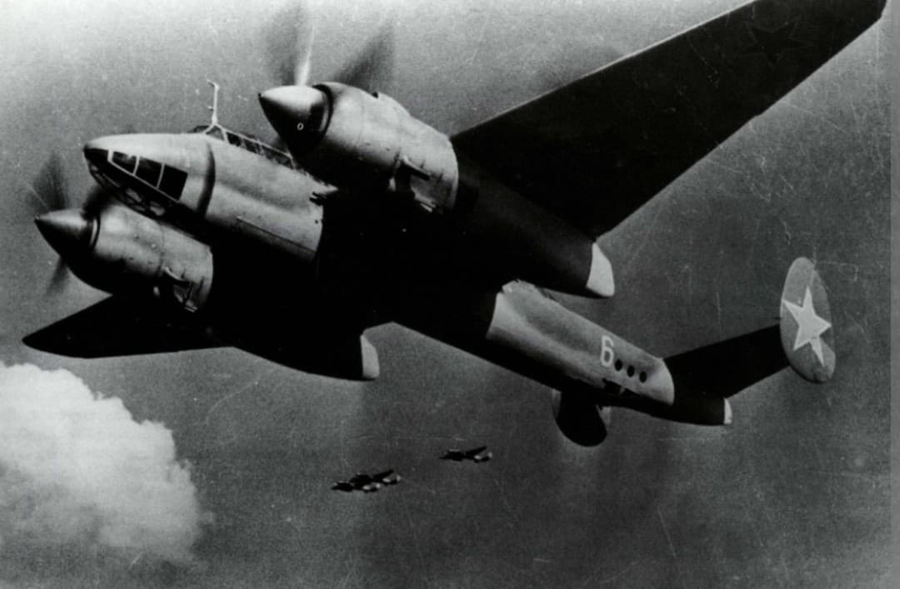

L'excellence technologique soviétique : rapidité, polyvalence et puissance de frappe redoutable

Le Tupolev Tu-2 (désignation OTAN Bat) est un bombardier moyen bimoteur rapide et robuste conçu par le bureau d'études d'Andreï Tupolev. Conçu initialement au sein d'un laboratoire de détention d'État (la Sharashka) au début de la guerre, le Tu-2 est entré en production de masse à partir de 1943 et s'est imposé comme l'un des meilleurs bombardiers moyens du conflit.
Capables de rivaliser avec les meilleurs chasseurs à piston de la Luftwaffe en vitesse de pointe, le Tu-2 combinait la capacité d'emport de bombes d'un bombardier lourd avec la manœuvrabilité et la vitesse d'un appareil d'attaque tactique. Il a joué un rôle décisif lors des dernières grandes offensives soviétiques jusqu'à la bataille de Berlin.
Spécifications de référence du Tupolev Tu-2S (version de série standard de 1944) :

L'histoire de la création du Tu-2 est indissociable du contexte stalinien : Andreï Tupolev dessina les plans initiaux du projet « 103 » alors qu'il était emprisonné dans une *Sharashka* (un centre de recherche secret regroupant des scientifiques et ingénieurs détenus).

Engagé à grande échelle à partir de 1944 (notamment lors de l'**Opération Bagration** en Biélorussie et de la libération des pays baltes), le Tu-2 s'est révélé être un instrument de destruction d'une efficacité redoutable contre les fortifications ennemies.
Lors de l'**assaut final sur Berlin en avril 1945**, des régiments entiers de Tu-2 ont effectué des raids incessants de jour comme de nuit, détruisant les nœuds ferroviaires, les concentrations de blindés et les points d'appui fortifiés nazis. Sa polyvalence était telle qu'il resta en service au sein de la VVS et de plusieurs pays alliés bien après la fin du conflit mondial.
Page du Musée HOP WW2 – Tupolev Tu-2